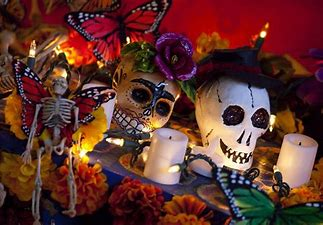
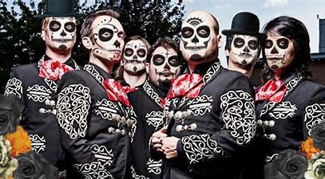

Día de Muertos en casa: ¿cómo hacer una celebración inolvidable?
Preparen un altar de muertos
El altar u ofrenda de muertos es la tradición más importante de este festejo. Nuestros difuntos, se supone, regresan para disfrutar de sus alimentos favoritos y darse una vuelta por el mundo de los vivos. Preparar un altar en familia es una de las experiencias más bonitas que puedes vivir en esta temporada del año. Lo puedes hacer tan sencillo o completo como tú quieras, solo recuerda que los elementos principales son: retratos de los difuntos, flores y velas encendidas. Se puede hacer desde unos días antes y, el mero día, solo agregar sus alimentos favoritos. También pueden añadir papel picado, calaveritas de azúcar, copal o cualquier otra cosa para adornar o mejorarlo. Repártanse las tareas y disfruten este momento especial.Escriban calaveritas
Las calaveritas son poemas cortos en rima, que relatan la supuesta muerte de alguien. En las líneas de una calaverita, se describen ciertos rasgos o características del personaje al cual va dedicada. Al final, se explica cómo es que esos rasgos ocasionaron la muerte del susodicho. Este juego es divertido porque revela lo que se piensa acerca de cada miembro de la familia y también le saca el lado creativo a todos, ya que deben hacer un poema ingenioso, con cadencia y en rima.Recuerden a los suyos
Tómense un momento de la noche para recordar a los que ya no están. La esencia de esta celebración es la idea de que aquellos que se fueron, no lo hicieron del todo, y que hay una parte de ellos que nos acompañará siempre. Platiquen de las anécdotas, de lo que hacían y les gustaba en vida. Esa es la mejor manera de mantenerlos siempre vivos en sus recuerdos. No hay duda de que se puede festejar el Día de Muertos en casa y pasar un tiempo inolvidable en familia. ¡Inténtalo!El mejor lugar donde celebrar el dia de muertos fuera de casa
En la capital de Yucatán, así como en diversas comunidades, aún permanece intacta la tradición maya de celebrar el reencuentro con los seres queridos que se adelantaron. Allí, dicha fiesta es llamada Hanal Pixán. En Mérida, la celebración dura siete días, que los habitantes de la ciudad los dedican a recordar a sus familiares muertos. Aquí, según sus creencias ancestrales esos días los difuntos tienen permiso para descender a la tierra. Y es que, para los mayas, esta festividad es de añoranza y culto por los seres queridos que han tenido que partir. Uno de los eventos más representativos es el Paseo de las Ánimas, en la que cientos de muertos vivientes caminan desde el cementerio general hasta el Arco de San Juan. En estos días, en las casas, panteones e iglesias son colocados altares cubiertos con un mantel blanco o negro. Esto depende del comportamiento que tuvo el difunto en vida terrenal. Las ofrendas son adornadas con velas de cera negra elaboradas en Ticul, alfarería de Maxcanú, así como tazas y platos, ya que esto es parte importante de la escenografía típica de esta celebración. Además de la comida tradicional como mucbipollo y atole nuevo, entre otros platillos.
MEJORES DISFRACES
